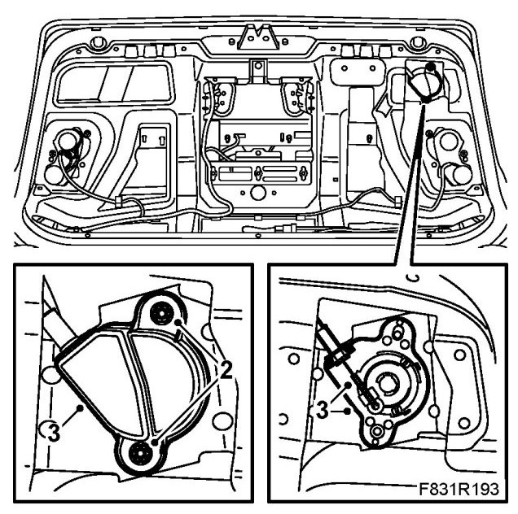
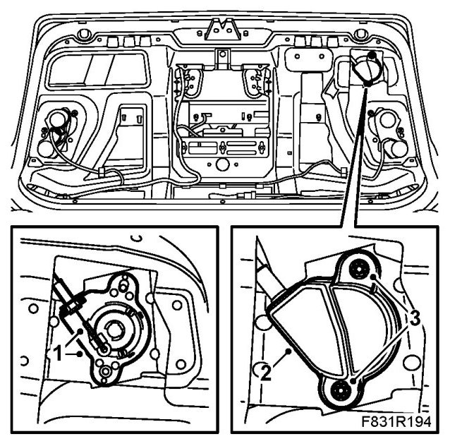

Trunk / Liftgate Lock Cylinder: Service and Repair
Bootlid Lock Cylinder, CV
To remove
1. Open the bootlid and remove the bootlid trim.
2. Remove the nuts.

3. Lift out the cover. Pull out the cylinder and unhook the cable.
To fit
1. Hook on the cable and put the cylinder in place.

2. Fit the cover.
3. Fit the nuts.
4. Fit the boot lid trim.